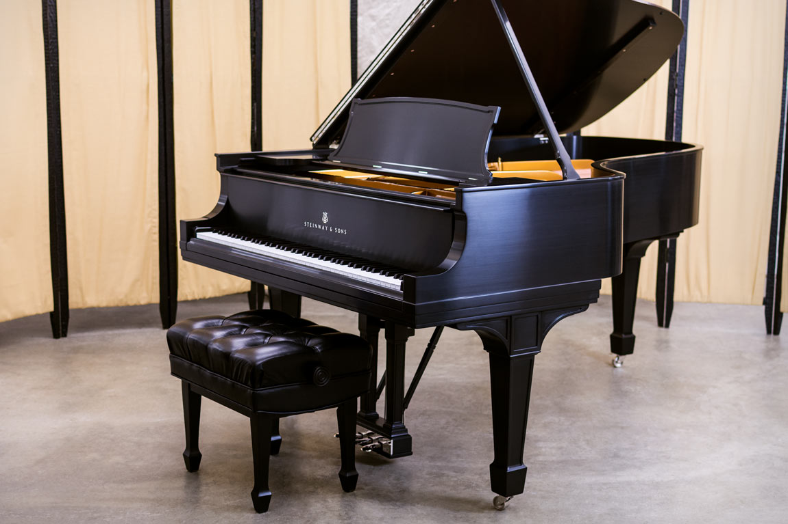
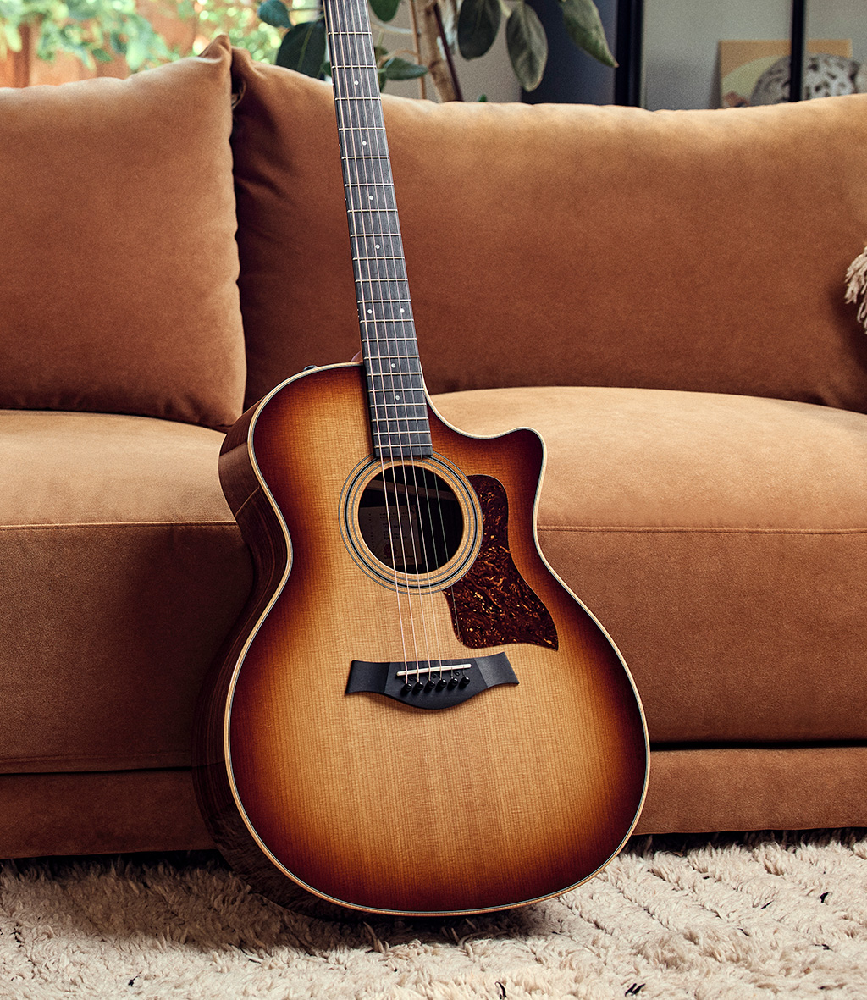
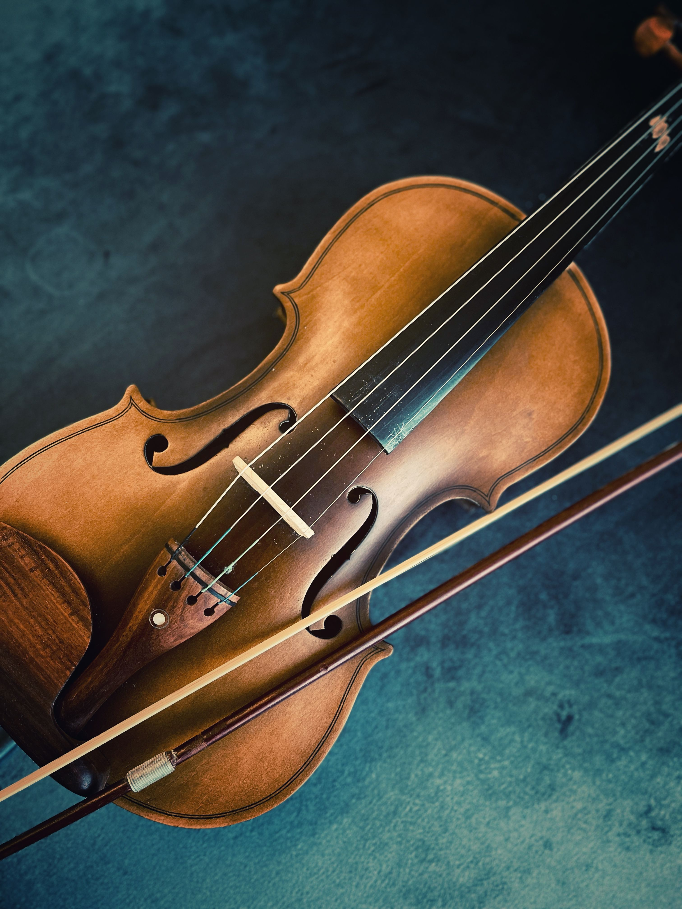
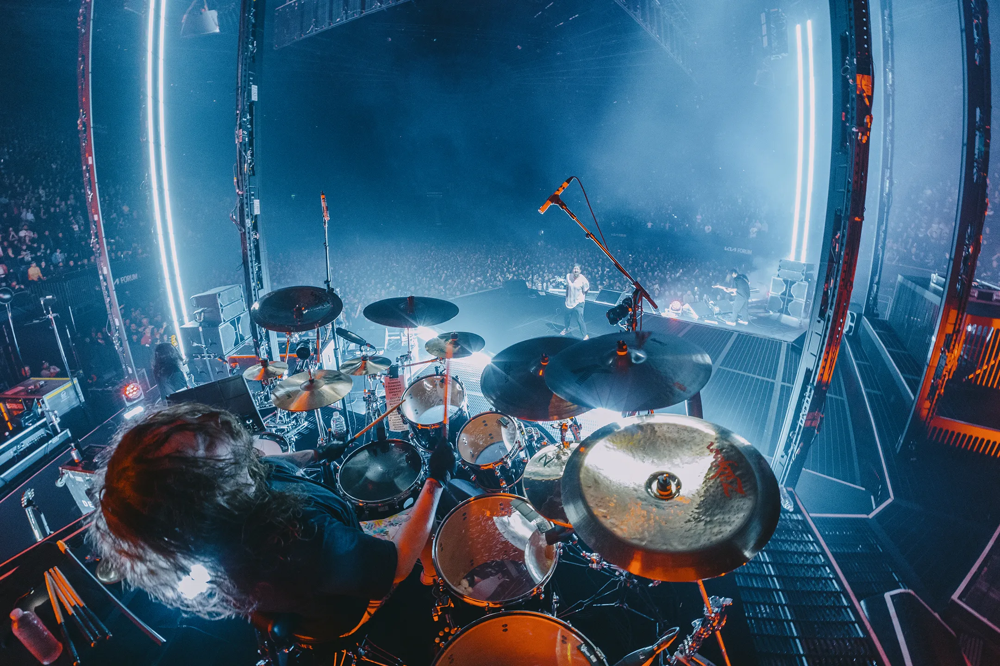
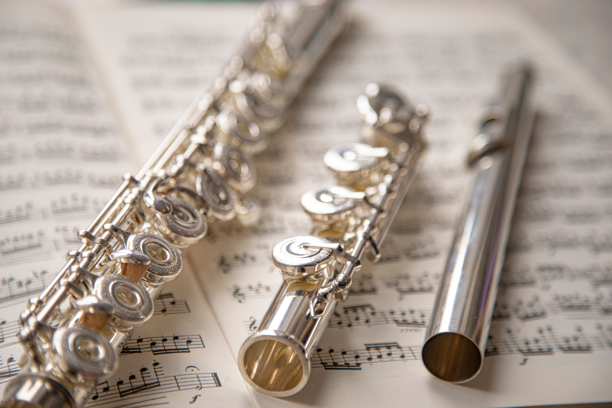

Populiariausi instrumentai:
Fortepijonas
Tai klavišinis mušamasis chordofonas (styginis muzikos instrumentas). Jo pavadinimas kilęs iš italų kalbos žodžių forte (stipriai) ir piano (tyliai), kas nurodo instrumento gebėjimą keisti garso stiprumą priklausomai nuo to, kaip stipriai spaudžiami klavišai.

Gitara
Tai vienas populiariausių pasaulyje styginių muzikos instrumentų, naudojamas tiek solo atlikimui, tiek ansambliuose ar grupių pasirodymuose.

Smuikas
Styginis muzikos instrumentas, kuriuo grojama braukiant stryku per stygas. Jis pasižymi skambiu, švelniu ir išraiškingu garsu. Smuikas dažnai naudojamas klasikinėje, liaudies ir šiuolaikinėje muzikoje.

Būgnai
Mušamasis muzikos instrumentas, kuriuo išgaunami garsai mušant lazdelėmis, rankomis ar pedalais. Jie padeda palaikyti muzikos ritmą, tempą ir suteikia kūriniui energijos. Būgnai dažniausiai naudojami roko, pop, džiazo ir kitų stilių muzikoje.

Fleita
Pučiamasis muzikos instrumentas, kuriuo grojama pučiant orą į angą. Ji pasižymi švelniu, lengvu ir skambiu garsu. Fleita naudojama klasikinėje, liaudies ir šiuolaikinėje muzikoje.
